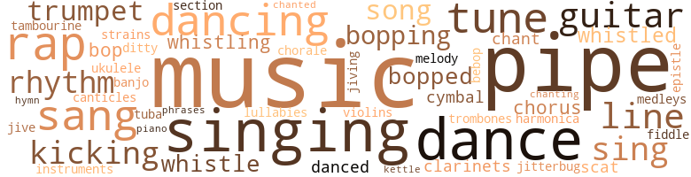
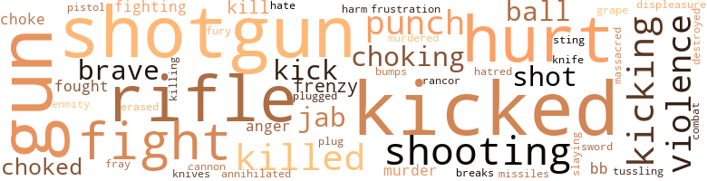
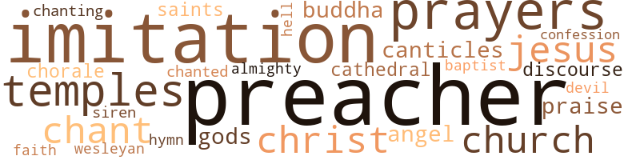

My Main Mother, by Beckman, Barry (1969)
195 music-related terms matched in this text.
Most frequent terms in this topic: music (22); pipe (17); singing (13); dance (10); rap (8)
banjo.n.01
Definition: a stringed instrument of the guitar family that has long neck and circular body
| word | sentence |
|---|---|
| banjo | I looked at the guitars ( two ) , ukulele , banjo and tambourine on the shelves behind the counter before I realized that the place did n't even have a drum set for sale . |
bass_horn.n.01
Definition: the lowest brass wind instrument
| word | sentence |
|---|---|
| tuba | They were all out of tune , stepping on pumpkins and losing their balance , the tuba player almost falling and taking that loss of footing as a warning to walk ever so slowly , falling way behind the rest of the band - so far that his blowing was like a faraway owl 's hooting . |
bop.n.02
Definition: an early form of modern jazz (originating around 1940)
| word | sentence |
|---|---|
| bebop | Boogie woogie , Charleston , bebop . " |
bop.v.01
Definition: dance the bebop
| word | sentence |
|---|---|
| bopping | But they came bopping down the street from our right , jumped into our periphery as if , like horses , we were wearing blinders . |
| bopping | One , the leader , no doubt , scraped bis feet , shuffled one foot forward - bopping even in that one step . |
| bopped | I bopped like I was a Supreme Lord - swinging and dipping , working up a sweat . |
| bop | See , if she had n't disappeared to the big city , I probably would n't be sitting here now on the last evening of my reading with this wear : boots buckled around the ankle ; steel-frame shades ; the high-topped and wide-sided Afro-style haircut ; an Apache scarf around my neck ; and the confidence ( yes , I wear that on my face ) that I can bop with the best of them . |
| bopped | Although needing only three steps to reach the door , I bopped . |
| bopping | I , snapping my fingers and bopping my head , shuffled through the air-conditioned , dark Topnote Caf6 . |
| bops | I glanced at a few pairs of eyes digging me , then I made certain I put on one of my best bops as I struck out for the stage , struck out behind the trumpeter . |
| bop | Did n't I bop around the school halls like I owned them , carrying a Drown bulletin and schedule of classes for the fall semester ? |
| bopping | I was n't bopping , I had my hands stuffed in my pants pockets and I heard frogs in the woods along the sidewalk . |
| bopped | I threw down my sticks , and head light and floating - floating on a pillow , seemingly - bopped though that side yard toward the front steps . |
| bopped | I placed the bottle in the bottom of the box and bopped toward the steps , dipping my knees and thrusting my shoulders forward in my best imitation yet of a Supreme Lord . |
| bopping | For love , " he said again , opening the door and bopping into the P.O. And he repeated the words when we returned to the house and stepped down from the Ford 's runningboard . |
canticle.n.01
Definition: a hymn derived from the Bible
| word | sentence |
|---|---|
| canticles | There was a clanging that was not jarring ; chimes unlike the sounds of bells ; indistinguishable strains and medleys , canticles and chants swirling around the store , but yet - I heard and did not hear , felt but did n't really feel . |
chant.n.01
Definition: a repetitive song in which as many syllables as necessary are assigned to a single tone
| word | sentence |
|---|---|
| chants | There was a clanging that was not jarring ; chimes unlike the sounds of bells ; indistinguishable strains and medleys , canticles and chants swirling around the store , but yet - I heard and did not hear , felt but did n't really feel . |
| chant | " Let him break the record , let him break the record , let him break the record , " came the chant , drowning out Murphy 's voice at four in the afternoon . |
chorale.n.01
Definition: a stately Protestant (especially Lutheran) hymn tune
| word | sentence |
|---|---|
| chorale | Okay , so the chorus of canine outbursts was more like a band abandoned by its leader than a Bach chorale . |
chorus.n.01
Definition: any utterance produced simultaneously by a group
| word | sentence |
|---|---|
| chorus | Okay , so the chorus of canine outbursts was more like a band abandoned by its leader than a Bach chorale . |
| chorus | Suddenly , a two-man chorus of hoorays and cheers . |
| chorus | Like a Grecian chorus , it whistled at all the windows in the house . |
clarinet.n.01
Definition: a single-reed instrument with a straight tube
| word | sentence |
|---|---|
| clarinets | My ears were inundated with trumpets , the bass , clarinets and trombones . |
| clarinets | And his face was swirling around in a sudsy maze of reeds , recorders , clarinets , keys , notes , bars . |
cornet.n.01
Definition: a brass musical instrument with a brilliant tone; has a narrow tube and a flared bell and is played by means of valves
| word | sentence |
|---|---|
| trumpet | " That all ? " said the salesman , not looking at me , but bending over as if he were bowling ; sliding the glass door of the display case to one side ( his eyes squinted behind his hornrimmed glasses ) , reaching in , two , three fingers grasping , making contact , edging around a long , thin cardboard box ; then , pulling the box out carefully , so he would n't knock over the harmonica standing lengthwise or the trumpet mouthpiece , and placing the box on the counter . |
| trumpet | But the man on the trumpet would shift gears and glide , soar far upward onto another level . |
| trumpet | " Lonely , really " - he was sipping his newly ordered drink - " I get so lonely I feel like screaming , I feel like tearing my trumpet to pieces . " |
| trumpet | And I was gaining now , could hear the siren in my ears getting louder and louder , as if someone had placed a trumpet next to my ear . |
| trumpet | I was close to tears , yet I had to keep playing , keep shouting out my protest as that trumpet player in the Village had done , even as that drummer at Boston 's Rialto had . |
cymbal.n.01
Definition: a percussion instrument consisting of a concave brass disk; makes a loud crashing sound when hit with a drumstick or when two are struck together
| word | sentence |
|---|---|
| cymbal | Maley did n't even turn around ; did , however , allow me an awkward moment to bend down to reach for my sticks ( suddenly the most elusive pieces of wood in the world ) so that , while dirtying my fingers which scraped around on the floor , my shoulder hit the stand for the hi-hat cymbal , and it tottered while the cymbals clanged the waiter set up the glasses . |
| cymbals | Maley did n't even turn around ; did , however , allow me an awkward moment to bend down to reach for my sticks ( suddenly the most elusive pieces of wood in the world ) so that , while dirtying my fingers which scraped around on the floor , my shoulder hit the stand for the hi-hat cymbal , and it tottered while the cymbals clanged the waiter set up the glasses . |
dance.n.01
Definition: an artistic form of nonverbal communication
| word | sentence |
|---|---|
| dance | And they laughed , and circled around in their own dance , and Uncle pulled out his pipe , began tapping it , and I reached for the sticks and pad that Julius had laid on the table , and I headed for the door . |
| dance | She told how Uncle had met Maybelle at a dance when both could jitterbug their shoes off . |
| dance | And I think that the din from those dogs - Plato , Hufus , all of them - was following me a week later as I hitched up my pants just outside the auditorium for the start of the freshman dance . |
| dance | I think standing outside , hesitating , unsure , an unsteady hand of unsteady fingers reaching for my dance ticket - 1 think I was hearing the dogs spur me onward . |
| dance | And had n't they also , just minutes before the start of the dance , screeched in my ear ? |
| dances | " It 's so dark , how can you tell , " I said , keeping my cool , and wishing I could break out into the twist like Lucy or do the Watusi or maybe even the funky Broadway , dances I had learned in the Apple ; and dances that made me comfortable . |
| dances | " It 's so dark , how can you tell , " I said , keeping my cool , and wishing I could break out into the twist like Lucy or do the Watusi or maybe even the funky Broadway , dances I had learned in the Apple ; and dances that made me comfortable . |
| dance | And when the waltz ended and I realized I had engineered myself successfully through the entire dance without stepping on her toes a second time and we were clapping for the orchestra , she moved closer to me , was facing me and smiling , pushing her freckled nose nearer to my face ( meanwhile , panicky , I considered that I was the only one still wearing my beanie , so I stashed it inside my jacket ) , and whispered , her fragrance dancing around and almost dizzying , at least inebriating my brain : " Mckinley went to Lawrence-ville . " |
| dance | " Long time since the last dance . " |
| dance | Then he went over to Mother 's seat , swept his brim in an arc before him and bowed , said , " May I have this dance , lovely lady ? " |
| dances | After two dances , Larson took off his jacket , exposed his yellow suspenders , pulled up his sleeves . |
| dance | When the last record plopped down and the needle fell on the record and it played and the two of them began their dance again , Uncle spotted me by the fence and came over and watched with me . |
dance.v.02
Definition: move in a pattern; usually to musical accompaniment; do or perform a dance
| word | sentence |
|---|---|
| dancing | I looked down but did n't see , heard but did n't comprehend the figures dancing around on that dusty wooden stage . |
dance.v.03
Definition: skip, leap, or move up and down or sideways
| word | sentence |
|---|---|
| dancing | Having done his tiling , Maine-line was dancing off the stage on the tip of one shoe . |
| danced | Julius swung around , feet missing Jeff 's paws , caught Mother around the waist , danced her past me . |
| danced | Mother snatched the telegram from Julius , read it to herself , I saw her eyes bulge , then she shouted , threw the telegram in the air as if it were one big piece of confetti , grabbed Julius , her husband , around the neck , and they danced in a circle singing until Uncle finally woke up and came to the doorway with l > oth hands scratching his eighth-of-an-inch growth of hair . |
| dance | I know you can jump and dance . " |
| dancing | And when the waltz ended and I realized I had engineered myself successfully through the entire dance without stepping on her toes a second time and we were clapping for the orchestra , she moved closer to me , was facing me and smiling , pushing her freckled nose nearer to my face ( meanwhile , panicky , I considered that I was the only one still wearing my beanie , so I stashed it inside my jacket ) , and whispered , her fragrance dancing around and almost dizzying , at least inebriating my brain : " Mckinley went to Lawrence-ville . " |
| dancing | We were dancing again , it was a slow piece I 'd never heard in my life , and I whispered the sweetest somethings I could think of in her ear . |
| dancing | She looked up at me from her knees , reached for me with two hands , fingers clutching toward my belt , her eyes dancing in her head like loose marbles . |
| dancing | All out of breath , dancing no more . |
| dancing | " Joe Louis , " said Samuel , footling , dancing on his skinny toes , and placing his arms up in a vertical victory sign . |
ditty.n.01
Definition: a short simple song (or the words of a poem intended to be sung)
| word | sentence |
|---|---|
| ditty | Uncle snapped his fingers , hummed a little ditty , as a flash of furnace light illuminated his wet lips for an instant . |
epistle.n.02
Definition: a book of the New Testament written in the form of a letter from an Apostle
| word | sentence |
|---|---|
| epistle | I 'll put something on your mind , I told inyself , you jive-time . . . So , no wonder that letter , rapture-bringing epistle that it was , shook in my hands like a paper earthquake . |
guitar.n.01
Definition: a stringed instrument usually having six strings; played by strumming or plucking
| word | sentence |
|---|---|
| guitar | Julius , leading us , stopped by a flight of stairs on the side and said , not looking at us but along the walls checkered with photos of cinema stars and local guitar singers , " Mitchell , you and Melvin go along up in the balcony . |
| guitar | Say , look '' - holding the microphone and patting his white shoes in time with the band , unpressed pants shaking - " without further ado , I want to introduce to you some of New England 's finest acts , and here are the facts : Cousin Dynamite Calvin playing the electric guitar ! " |
| guitar | I watched Duke Gibson tap-dance with a mouthful of teeth flashing , and Dynamite Calvin swing his guitar with so much rhythm , he almost propelled himself off stage . |
| guitars | I looked at the guitars ( two ) , ukulele , banjo and tambourine on the shelves behind the counter before I realized that the place did n't even have a drum set for sale . |
| guitar | She wanted me to study classical guitar . " |
| guitar | Here I am a black man with the ability to play music that we started , and she wants me to study classical guitar . |
harmonica.n.01
Definition: a small rectangular free-reed instrument having a row of free reeds set back in air holes and played by blowing into the desired hole
| word | sentence |
|---|---|
| harmonica | " That all ? " said the salesman , not looking at me , but bending over as if he were bowling ; sliding the glass door of the display case to one side ( his eyes squinted behind his hornrimmed glasses ) , reaching in , two , three fingers grasping , making contact , edging around a long , thin cardboard box ; then , pulling the box out carefully , so he would n't knock over the harmonica standing lengthwise or the trumpet mouthpiece , and placing the box on the counter . |
hymn.n.01
Definition: a song of praise (to God or to a saint or to a nation)
| word | sentence |
|---|---|
| hymn | The needle on the record had reached the end of the hymn , and briefly nobody moved or seemingly even thought ; indeed , as if existence had been in abeyance , the needle 's scratching grated against our ears , grated and scratched , softly popped , clicked , clicked and crackled . |
jitterbug.v.01
Definition: do the jitterbug
| word | sentence |
|---|---|
| jitterbug | She told how Uncle had met Maybelle at a dance when both could jitterbug their shoes off . |
jive.v.01
Definition: dance to jive music; dance the jive
| word | sentence |
|---|---|
| jiving | A buy of a lifetime , man , I ai n't jiving . |
| jive | They walked their out-of-sight walks and popped their fingers and kept getting up when cats ( corner connoisseurs ) tried to jive with them . |
kettle.n.04
Definition: a large hemispherical brass or copper percussion instrument with a drumhead that can be tuned by adjusting the tension on it
| word | sentence |
|---|---|
| kettle | No , it was n't the sound of a kennel of dogs , but more like our tea kettle screaming of boiling water . |
kick.v.04
Definition: kick a leg up
| word | sentence |
|---|---|
| kicking | Sitting in a collapsible chair , digging the flick while the frankfurters and popcorn cooked behind us and my foot stuck now into chewing gum and people in back of me talking as if they were at a ballgame and kicking the back of my seat , I watched Tarzan swing through the trees . |
| kicking | The rest was part dream , part real : big Larson with his hairy leg and sweaty ass and side pushing against me ; the bedsprings squeaking , moving up and down ; trees rustling outside ; groaning and slapping , scratching and twisting ; an airplane droning above it all ; no 's and ooh 's and more ooh 's ; gasping breath , indrawn breath , sighs ; squirming and kicking ; a cricket proclaiming his happiness ; an elbow in my stomach ; total darkness except for a window full of stars ; then trembling , more trembling , a very reluctant end and a close , embarrassing odor ; and I there during it all . |
| kicking | Popguns , noise-makers and horns were going off in the background on Atlantic Avenue , and the gigantic yellow pumpkin smelled like a squash farm , and Will was leaning over toward Uncle , he was looking my uncle straight in the eyes and kicking dust up while some strains from a fiddle broke the silence and we knew the squaredancing had started - all this hesitating while I , holding the tin pie plate in one hand , pinched my nostrils for fear of suffocating from the odor of so much pumpkin . |
| kicking | The radiator by the window began tapping and kicking , steaming like a locomotive , hissing like so many snakes . |
| kicking | Her arms were swinging , and her little feet were kicking , and she was looking downward as she pulled up and stopped in front of me . |
lullaby.n.01
Definition: a quiet song intended to lull a child to sleep
| word | sentence |
|---|---|
| lullabies | But I sang lullabies to you , and you drifted off . |
medley.n.01
Definition: a musical composition consisting of a series of songs or other musical pieces from various sources
| word | sentence |
|---|---|
| medleys | There was a clanging that was not jarring ; chimes unlike the sounds of bells ; indistinguishable strains and medleys , canticles and chants swirling around the store , but yet - I heard and did not hear , felt but did n't really feel . |
music.n.01
Definition: an artistic form of auditory communication incorporating instrumental or vocal tones in a structured and continuous manner
| word | sentence |
|---|---|
| music | " I 'm Maine-line Martin , your Martian maniac , your main man from Maine with die most in music , here in Boston . |
| music | More marching music . |
| music | My eyes cruised over the dusty steel sheet-music holders holding dusty sheets of music . |
| music | " Do n't touch , kid , I 'll he right back " - sliding in his slippers toward the record player , rejecting a record , coming back to the sofa , pushing a plant and an ashtray to the end of the table , clearing a space on the table and tapping along with the music of Duke Ellington . |
| music | The music was in my mind , had been pent up there for a lifetime , I guess , and now , in the moonlight , in the cold night , in nolx ) dy 's sight , it was spilling out , and I was playing along with the fat cats : Bix , Gene , Coleman , Duke , the Count . |
| music | Listen to that music . |
| music | Now , after having packed music books and underwear ; Maybelle 's old , long coats and dresses and slips and hats ; bright silk ties and Continental suits - after packing bags and trunks all morning , they were ready to say good-bye . |
| music | " No women ; bathroom and shower at the end of the hall ; and no loud music . |
| music | The music is soft , the lights are low ; candlelights , violins , good wine . " |
| music | The music came out like a train going by . |
| music | The way the music seeped out just as the door opened and closed , I knew this club had to be our first stop ; later for Mother - for a while , anyway . |
| music | The music came from the stage on our left . |
| music | Here I am a black man with the ability to play music that we started , and she wants me to study classical guitar . |
| music | Jazz is our music , baby . |
| music | I told her that jazz was our music , and she started coming up with all sorts of exceptions . |
| music | They were reading in wheelchairs , the sun had been long gone , the music was soft . |
| music | I knew my answer was not in the music and rhythm that the sticks symbolized . |
| music | The organ music was " Rock of Ages , " and there were two pots of flowers sitting on either side of the white casket . |
| music | We moved sideways along the dais in time with the music . |
| music | Ranida in her knitted veil , Samuel wearing a suit - they both stared at me , and the music was still going , everybody had taken his seat . |
| music | Ranida said , " Turn on the music , " and Uncle turned , went to the box , placed an organ march on the spindle . |
| music | The music stopped . |
musical_instrument.n.01
Definition: any of various devices or contrivances that can be used to produce musical tones or sounds
| word | sentence |
|---|---|
| instruments | - pointing one rough finger from the right hand toward the sign reading harmony shop - musical instruments FOR SALE OR RENT . |
phrase.n.02
Definition: a short musical passage
| word | sentence |
|---|---|
| phrases | But I had some biblical phrases to throw at him , if I cared to , like lex talionis . |
piano.n.01
Definition: a keyboard instrument that is played by depressing keys that cause hammers to strike tuned strings and produce sounds
| word | sentence |
|---|---|
| piano | She could get the spirit ( they said ) before the preacher even began , and could bang sin out of a piano . |
pipe.n.04
Definition: a tubular wind instrument
| word | sentence |
|---|---|
| pipe | They played over a dimly lighted table , cards sliding here and there , a cigarette and a pipe hanging out of the mouths of the two men smokers . |
| pipe | We all watched Uncle pull out his pipe and begin . |
| pipe | And we saw people : Uncle lifting his smoke - throwing pipe out of his mouth , Uncle tipping his hat , Uncle stopping to shake a hand , Uncle smiling . |
| pipe | He pulled out his pipe , bent over , and started knocking it on the heel of his boot . |
| pipe | And they laughed , and circled around in their own dance , and Uncle pulled out his pipe , began tapping it , and I reached for the sticks and pad that Julius had laid on the table , and I headed for the door . |
| pipe | The motor , now turned off , was still ticking , and Uncle was staring ahead through the front windshield with his pipe held steadfast and his jaws tense . |
| pipe | Uncle stood tall , gestured with his pipe toward the slip on Mother 's arm . |
| pipe | My Uncle Melvin Pip raised the back of his hand to his mouth and cleared his throat , then pulled at his wide , canvas-cloth army belt , then patted out tobacco from his pipe into his palm . |
| pipe | But I knew he " Oh , yeah , " looking ahead , biting on his pipe , " Jeff 's in good hands . |
| pipe | I had almost fallen asleep , Uncle had begun clearing his throat impatiently , tapping his pipe . |
| pipe | He shaved in front of a cracked mirror attached to a dusty bureau , nicked his face in two places , and , his hands cupped over the flame of his pipe , now lighted , he turned to me with the mouthpiece between his teeth , mumbled , " Let 's go , Mitchell . |
| pipe | " We ai n't got no money , " said Uncle , and I was startled by the sudden clearing of his throat and his snatching the pipe out of his mouth in anger . |
| pipe | Uncle was working his tool into his pipe , he was emptying the ashes on the steps - no , we still had n't moved - and saying : " It 's a shame . |
| pipe | It was dark except for the red flame of his pipe . |
| pipe | And he said that standing sideways , profiling his pipe and snapping out the words from the side of his mouth . |
| pipe | " Do good , we 're goin ' huntin ' , " said Uncle , filling his pipe , clearing his throat . |
| pipe | Uncle pulled up his sleeves , knocked out his pipe , stomped his feet . |
rap.n.05
Definition: genre of African-American music of the 1980s and 1990s in which rhyming lyrics are chanted to a musical accompaniment; several forms of rap have emerged
| word | sentence |
|---|---|
| rap | I should he able to wrap up the proofreading on my rap sometime late tonight by flashlight , if Jeff gets himself together . |
| rap | Only the manuscript will live on to tell it like it was , to rap in an uptight way , to put my game in the street . |
| rap | I could rap with Jeff for days on end , because he could n't talk back to me . |
| rap | For then , I made notes of their vocabulary so I could rap with the best of them when I got to the Village . |
| rap | You have to rap to dogs like that . |
| rap | But could I rap to this chick as they had done to theirs ? |
| rap | I could n't , did n't even try to rap to these babes looking for upstanding husbands from Scarsdale , Chevy Chase and Lexington who would take them to Europe during the summer and convenience them with fat black maids and cooks during winter and summer . |
| rap | So I really stopped trying to rap to those broads after one from Radcliffe asked me at a mixer during my second year what my father 's occupation was and I looked up to the ceiling , blinked my eyes , felt as if my ankles were covered with quicksand , looked over my shoulder , started stammering . |
rhythm.n.04
Definition: the arrangement of spoken words alternating stressed and unstressed elements
| word | sentence |
|---|---|
| rhythm | I watched Duke Gibson tap-dance with a mouthful of teeth flashing , and Dynamite Calvin swing his guitar with so much rhythm , he almost propelled himself off stage . |
| rhythm | Mother 's hair was in her eyes , and she was holding the brown pint bottle of bourbon in one hand , turning the doorknob impatiently with the other , tapping her bare foot to a fast rhythm . |
| rhythm | So , there I was fighting the pain with all my resolve and all the rhythm I could squeeze out of my wrists , and the mallet was hitting me harder and harder , enhancing the pain until I thought my skin had been broken and the hammer was cracking against my cranial bones . |
| rhythm | I knew my answer was not in the music and rhythm that the sticks symbolized . |
| rhythm | Stance : left foot in front , right foot in rear ; flatfooted ; right arm high with elbow away from body ; eyes watching Julius 's eyes ( closed ) ; left foot sliding forward ; weight shifting onto left ; right foot too sliding forward about a foot , and Samuel had a waltzlike rhythm going for him , as if he were counting feet - one , two , three , four ; one , two , three , four : as footloose keeping his footing as an eighteenth-century footman serving tables in an inn ; as grim-looking as foot soldiers in a swamp ; and paradoxically , as colorful as an actor stage front , greedily collecting the glare of the footlights ; so , right fist moving as fast as a shotgun hammer and nailing Julius on the side of the chin , near the brain , with foot-pounds of power . |
scat.n.01
Definition: singing jazz; the singer substitutes nonsense syllables for the words of the song and tries to sound like a musical instrument
| word | sentence |
|---|---|
| scat | He jumped in the front next to her , so I had to sit alone in the back scat where Jeff rests now . |
| scat | Outside in the October air , I tried to keep my cool by scatting : Scat , scat umdoowa Shoo bop um bop But I broke down crying on the college green and could n't finish scatting . |
section.n.01
Definition: a self-contained part of a larger composition (written or musical)
| word | sentence |
|---|---|
| section | I could have been their own one-man cheering section , yelling , " Go on for yourselves , brothers six . |
sing.v.02
Definition: produce tones with the voice
| word | sentence |
|---|---|
| sing | She said , " You 'll like it because Mommy is going to sing , honey . " |
| sang | Mother sang along with the radio , Julius snuggled his head against her shoulder . |
| Sing | There were whistles , shouts of " More , " " Sing another , baby , " " Come on back , " but Mother was too skilled in histrionics to return . |
| sang | " Put on another record , " he said , and she did , and as the big bad blues blared out , Julius jumped up , caught my mother around the waist , elbowed Uncle in the waist , just missed stepping on his shoes , turned Mother around , threw his head full of shiny black hair back , and sang , " We 're going to leave this place , right ? " |
| sang | Past the Living End , where Mother sang part-time on Saturdays and Sundays ; cars parked in the spaces like boats in slips ; blues blaring into the summer night ; black couples leaning on car hoods , and a man pulling up his fly , advancing out of the woods on the other side of the road . |
| sang | But I sang lullabies to you , and you drifted off . |
| sing | " Your father used to sing that to me a lot . " |
| sang | " I 'll never go back to Georgia , I 'll never go back , oh no , " sang Julius after he had filled his stomach with breakfast . |
| singing | Armstrong was blowing and singing some fast song about mama had better do right . |
| sing | " Listen to this song I used to sing all the time , when I was your age , Mitchell : Rainbow at night , Sailors delight . |
| sang | Mother paid for the drinks , the singer sang , and Julius came up to us . |
| sang | We shouted to each other , and Uncle sang old songs , outsinging the thunder . |
| sing | But Ranida stood up and began stomping her feet , humming , clapping her hands and starting : " Come on , children , let 's sing for Melvin . " |
singing.n.01
Definition: the act of singing vocal music
| word | sentence |
|---|---|
| singing | " I 'd be singing at the Boston Garden now if I did n't have . . . " Mother 's voice came ringing out of her bedroom . |
| singing | Only a single stage light hit her , and Boston was no place for her , was not large enough a city , she seemed to be telling us through her singing mastery . |
| singing | All this while singing : I had all kinds of luck . |
| singing | No more singing on the weekends in the Living End . |
| singing | Mother snatched the telegram from Julius , read it to herself , I saw her eyes bulge , then she shouted , threw the telegram in the air as if it were one big piece of confetti , grabbed Julius , her husband , around the neck , and they danced in a circle singing until Uncle finally woke up and came to the doorway with l > oth hands scratching his eighth-of-an-inch growth of hair . |
| singing | And all the while Uncle was cutting his rug , laughing and singing , it came to me that I had never in my life seen his teeth show so much . |
| singing | Mother , almost in tears , lugubrious as any coed without a date for homecoming , bemoaned her age , said that her singing career would never get the break it needed . |
| singing | Looking down at my folded hands , I blurted out , fearing that the carpet would absorb most of the volume : " My mother and father argue at nights , or either she is practicing her singing or they play cards all night at the dining-room table . |
| singing | No card playing , no singing practices , no arguments . |
| singing | They were all singing , Ranida leading and Julius 's voice squeaky , Mother 's syncopated and jazzy , Samuel 's basslike and toneless . |
| Singing | Singing to their be - loved old Uncle Melvin , who had kept dogs and taught me how to hunt and left me the car he loved . |
| singing | They were still singing downstairs . |
| singing | Another series of congratulations , an unharmonic singing by the makeshift , two-man choir of " Here Comes the Bride , " and a restless sighing and clearing of the throat by the preacher . |
song.n.01
Definition: a short musical composition with words
| word | sentence |
|---|---|
| song | And my mother hummed the song to me and smoked on the edge of the bed . |
| song | Armstrong was blowing and singing some fast song about mama had better do right . |
| song | " Listen to this song I used to sing all the time , when I was your age , Mitchell : Rainbow at night , Sailors delight . |
| songs | It had been dark , the sun having set an hour ago , at eight , and we had been chanting old school songs . |
| songs | We shouted to each other , and Uncle sang old songs , outsinging the thunder . |
tambourine.n.01
Definition: a shallow drum with a single drumhead and with metallic disks in the sides
| word | sentence |
|---|---|
| tambourine | I looked at the guitars ( two ) , ukulele , banjo and tambourine on the shelves behind the counter before I realized that the place did n't even have a drum set for sale . |
tone.v.01
Definition: utter monotonously and repetitively and rhythmically
| word | sentence |
|---|---|
| chanting | It had been dark , the sun having set an hour ago , at eight , and we had been chanting old school songs . |
| chanted | And we chanted : Here ive come , here we come , Brown men , Brown men ; Here we come , here we come , Brown men , Brown men . |
trombone.n.01
Definition: a brass instrument consisting of a long tube whose length can be varied by a U-shaped slide
| word | sentence |
|---|---|
| trombones | My ears were inundated with trumpets , the bass , clarinets and trombones . |
tune.n.01
Definition: a succession of notes forming a distinctive sequence
| word | sentence |
|---|---|
| melody | And this virtuoso with sticks was a bird too , flying between the melody , pecking at new seeds of expression , diving into an unknown . |
| tune | A split second it was of wishing - wishing that she had n't finished but was only preparing for the next tune , but then we all knew it was over and that the only remaining ritual was to applaud her . |
| tune | The band started a marching tune . |
| line | Some were scratching their heads , others were leaning toward another , conferring , trying to understand the punch line , trying to agree on a meaning or an evaluation of Uncle 's performance . |
| line | Meanwhile , Uncle , still wrapped in earmuffs , a greatcoat and fur-covered gloves , stood , saying : " You see , the punch line is when the guy says , ' But I already have a dog . ' |
| tunes | The band played one of those fast burlesque tunes , the projection man switched the spotlight on and off , and I ? |
| strains | There was a clanging that was not jarring ; chimes unlike the sounds of bells ; indistinguishable strains and medleys , canticles and chants swirling around the store , but yet - I heard and did not hear , felt but did n't really feel . |
| line | Soon there was a line of substitutes by the other end of the seesaw that must have reached across the street . |
| tune | They were all out of tune , stepping on pumpkins and losing their balance , the tuba player almost falling and taking that loss of footing as a warning to walk ever so slowly , falling way behind the rest of the band - so far that his blowing was like a faraway owl 's hooting . |
| tunes | " That 's one of my favorite tunes , " she said . |
| tune | And I hummed the tune that she had been humming ; was humming and waving my head back and forth when she pushed the door open so hard that the mirror hanging on it by a string rang and scratched against the wood . |
| lines | Uncle and I got in separate lines . |
| line | When my line diminished and I got to the porcelain bowl , I saw from the corner of my eye the fat , khaki-wearing man with hair on his arms holding his penis and looking at me . |
| line | I was the last in line , so I could take my time , could hold on to the edge of the casket as long as I wished . |
| tune | " Put on a jump tune and turn it up loud , because I want to have fun . |
uke.n.01
Definition: a small guitar having four strings
| word | sentence |
|---|---|
| ukulele | I looked at the guitars ( two ) , ukulele , banjo and tambourine on the shelves behind the counter before I realized that the place did n't even have a drum set for sale . |
violin.n.01
Definition: bowed stringed instrument that is the highest member of the violin family; this instrument has four strings and a hollow body and an unfretted fingerboard and is played with a bow
| word | sentence |
|---|---|
| fiddle | Popguns , noise-makers and horns were going off in the background on Atlantic Avenue , and the gigantic yellow pumpkin smelled like a squash farm , and Will was leaning over toward Uncle , he was looking my uncle straight in the eyes and kicking dust up while some strains from a fiddle broke the silence and we knew the squaredancing had started - all this hesitating while I , holding the tin pie plate in one hand , pinched my nostrils for fear of suffocating from the odor of so much pumpkin . |
| violins | The music is soft , the lights are low ; candlelights , violins , good wine . " |
whistle.n.01
Definition: the sound made by something moving rapidly or by steam coming out of a small aperture
| word | sentence |
|---|---|
| whistles | When Mother Anally walked her walk onto the stage , whistles sailed toward her . |
| whistles | There were whistles , shouts of " More , " " Sing another , baby , " " Come on back , " but Mother was too skilled in histrionics to return . |
whistle.v.01
Definition: make whistling sounds
| word | sentence |
|---|---|
| whistled | Uncle whistled out to him , and Julius waved , bumped his knees against five or so persons , brushed his coat over my head , took his seat next to mine . |
| whistling | The early-spring wind was cutting and whistling through the pines and blowing Uncle 's blue kerchief in his nose , and we had to shout to hear each other . |
| whistle | High-pitched voice breaking the silence like a curfew whistle . |
| whistled | The sanitation men were banging the garbage cans on the sidewalk , the air was close and stuffy , two women were curbing their dogs , and a milk truck was coining down the street , a newsboy whistled . |
| whistling | Standing , straining on my tiptoes and in all that darkness with a draft blowing against my face , the Hawk whistling and my hand waving back and forth for a string . |
| whistling | I was standing on the porch , was leaning against one of the posts , my legs crossed and my lips pursed for whistling , when I saw the low , fogged headlights bouncing up the road . |
| whistle | " Corduroy pants , army jacket to hold your ammunition and food , an orange cap so 's nobody wo n't blow your head off , a whistle for the dogs , pair of binoculars , and a shotgun . |
| whistled | Like a Grecian chorus , it whistled at all the windows in the house . |
160 violence-related terms matched in this text.
Most frequent terms in this topic: kicked (10); gun (8); shotgun (8); hurt (8); rifle (7)
affray.n.02
Definition: a noisy fight
| word | sentence |
|---|---|
| fray | Only this journal of the soul lists the participants of the fray for all time . |
anger.n.01
Definition: a strong emotion; a feeling that is oriented toward some real or supposed grievance
| word | sentence |
|---|---|
| anger | " We ai n't got no money , " said Uncle , and I was startled by the sudden clearing of his throat and his snatching the pipe out of his mouth in anger . |
| anger | I was packing my bags and moving like thirty , and he was screaming at me , calling me names , and I did n't even have enough anger in me to start a fight . |
battle.v.01
Definition: battle or contend against in or as if in a battle
| word | sentence |
|---|---|
| Combat | Combat them with drumsticks , the love of an old uncle and a dog 's friendship ? |
bb.n.01
Definition: a small pellet fired from an air rifle or BB gun
| word | sentence |
|---|---|
| BB | I had been shooting beer cans lined along the road in front of the house with my BB gun when I saw the bad sheen , the very , very bad convertible rocking and rolling up the road toward the house . |
| BB | While soaking his bread in egg yolk , he began , " I 'll give you a few pointers on shooting ; you do n't need too many , because I 've done this before with your BB gun . |
bump.n.01
Definition: a lump on the body caused by a blow
| word | sentence |
|---|---|
| bumps | Up that road with its miniature gullies and bumps , rocks and bird feathers . |
cannon.n.04
Definition: heavy automatic gun fired from an airplane
| word | sentence |
|---|---|
| cannon | The high school marching band , dressed in gray and blue , was parading down the street as if they had been scattered apart by a cannon . |
craze.n.02
Definition: state of violent mental agitation
| word | sentence |
|---|---|
| frenzy | So I stood on the linoleum floor , and under the bare twenty-five-watt bulb of a spotlight , I told them that Maine is known as the Pine Tree State , that the first naval fight during the Revolution was at Machias Ray , and I talked about Sebastian Cabot , Leif Ericson , Benedict Arnold , Daniel Webster , and soon I was like a doll unwound , like a pendulum that had fallen from potential to energy of motion , and I was gone - gone in a frenzy of verbal locomotion . |
| frenzy | - explode into a delicate frenzy of soft brushwork , wrists trembling . |
| frenzy | In a drunken frenzy , she had released the dogs . |
destroy.v.04
Definition: put (an animal) to death
| word | sentence |
|---|---|
| destroyed | The landscape looking like a golf course destroyed by granite tombs . |
displeasure.n.01
Definition: the feeling of being displeased or annoyed or dissatisfied with someone or something
| word | sentence |
|---|---|
| displeasure | I squinted my mouth to show displeasure . |
eliminate.v.03
Definition: kill in large numbers
| word | sentence |
|---|---|
| annihilated | Perhaps I would have been annihilated had I not stood , dizzy , from the hammock and decided that this was no way to protest . |
erase.v.01
Definition: remove from memory or existence
| word | sentence |
|---|---|
| erased | A question that erased my tiredness as if a healer had waved his clairvoyant hand over my head . |
fight.n.05
Definition: a boxing or wrestling match
| word | sentence |
|---|---|
| fight | So I stood on the linoleum floor , and under the bare twenty-five-watt bulb of a spotlight , I told them that Maine is known as the Pine Tree State , that the first naval fight during the Revolution was at Machias Ray , and I talked about Sebastian Cabot , Leif Ericson , Benedict Arnold , Daniel Webster , and soon I was like a doll unwound , like a pendulum that had fallen from potential to energy of motion , and I was gone - gone in a frenzy of verbal locomotion . |
| fights | Tom put down my red Hopalong Cassidy lunchbox , and he jumped on the seat from which Max crawled , almost stumbled , and I could see Tom 's underwear at the cracks of his short pants , it never occurring to me that one day in junior high school I would have one of the worst fights in my life with this cat . |
| fight | I was packing my bags and moving like thirty , and he was screaming at me , calling me names , and I did n't even have enough anger in me to start a fight . |
fight.v.02
Definition: fight against or resist strongly
| word | sentence |
|---|---|
| fighting | And she pulled me toward her , placed her arms around my shoulders , hugged me , kissed me on my forehead and said that of course he loved me as much as she did , but that Mommy and Daddy could n't get along without fighting all the time , so he decided to leave , but all parents loved their children so much , so very , very much . |
| fight | " I do n't want to fight you , Tom , " I said , lifting my feet out of one snow pile , placing them back in another sideways . |
| fought | Tom and I fought until most of the crowd had left for dinner , saying that was n't nothing and neither of us was doing anything . |
| fighting | So , there I was fighting the pain with all my resolve and all the rhythm I could squeeze out of my wrists , and the mallet was hitting me harder and harder , enhancing the pain until I thought my skin had been broken and the hammer was cracking against my cranial bones . |
| Fight | Fight back ? |
| fight | " He ca n't fight . " |
| fought | Julius and Samuel fought in that new mud . |
| fight | " Now , do n't fight , boys , " said Uncle , standing far enough away from them . |
| fight | " You boys should n't fight , " said Uncle , and kept on getting up toward the porch . |
fracture.n.01
Definition: breaking of hard tissue such as bone
| word | sentence |
|---|---|
| breaks | Julius , vined up and clean , complained about the bad breaks , showed me his bare black fingers us evidence that yes indeed he did have to pawn the rings . |
frustration.n.03
Definition: a feeling of annoyance at being hindered or criticized
| word | sentence |
|---|---|
| frustration | This home held scenes of love and death and even birth ( my grandparents ) , of marital sacrament and sexual sacrilege , of frustration ; also of dimly lighted fun scenes with Uncle . |
fury.n.01
Definition: a feeling of intense anger
| word | sentence |
|---|---|
| fury | He was stumbling now in the fury of his efforts , for his legs kicked up with less gusto , the thin-moustached smile was gone , he was a tired flagman at the airport waving in a plane for landing . |
gag.v.06
Definition: cause to retch or choke
| word | sentence |
|---|---|
| choked | For a while , four freezing explorers clapping our hands together , blowing cold smoke rings , stamping our feet on the floorl ) oards while the Ford 's engine choked , sputtered , coughed , did everything but start . |
| choking | I was choking from something that was n't even in my throat , and something was draining my insides . |
| choking | And I took a deep breath to hold back the choking in my throat , pulled out my handkerchief and wiped off some dirt from the door handle . |
| choking | I knew Uncle was considering the prospects for failure , was considering the uncountably preposterous contingencies that only someone with his outlandish penchant for the unexpected would fear ; I knew his imagination brought up these eventualities : having his nose pushed into the middle of a pie ; eating a pie that had turned rotten ; choking on the pieces ; and countless kinds of weird phenomena that would stand in the way of victory . |
| choked | Gasping and catching his breath , he choked out , " Did you see that ? |
| choke | He smiled at me , and we took the exit ; I listened to the Ford sputter and choke its way up the ramp ; I listened with crossed fingers . |
| choking | " God , this ai n't living , " Uncle answered , almost choking on emotion , and further , " All these people closed in together . |
| choked | " I put , " laughing so hard that the words choked , " I put salt in it . |
| choke | My eyes pinned the black stockings with the runs around both knees ; also , the black , dirty velvet dress that had been ironed a dozen or so times , now shiny and fitting her tightly - which was her style ; seeming to choke her in the waist , where the red-plastic , wide-buckled belt was wrapped . |
grapeshot.n.01
Definition: a cluster of small projectiles fired together from a cannon to produce a hail of shot
| word | sentence |
|---|---|
| grape | We fell up against the back yard 's grape arbor , sat on white lumps of chicken droppings and laughed . |
gun.n.01
Definition: a weapon that discharges a missile at high velocity (especially from a metal tube or barrel)
| word | sentence |
|---|---|
| gun | So I had to turn around again at the door and run back to the bathroom , get the BB gun , and step rapidly through that same scene again with my head down this time - like a ileus ex rnachitia chased off the stage . |
| gun | I clutched on to Mother 's skirt to keep from falling backward , felt the bag 's metal handle slip out of my perspiring palm , heard distinctly the snap-snap of the strings around the suitcase as they broke , and standing with one hand on the railing , the other on Mother 's white skirt , watched the suitcase ( having left a trail of two underpants , a water gun and a McIntosh apple ) tumble down to the bottom of the steps and open flat with a loud clack . |
| gun | A pair picked up my briefs , tried to beat off the dirt from them ; a pair saved my plastic water gun from a plummeting heel ; a pair - no , several pairs - were retrieving the broken string ; other hands were pushing the two sides of the suitcase together , trying to close it . |
| guns | We were going great guns . |
| guns | But Uncle was a man of the outdoors , would gather his dogs , guns and traps on the weekends , kiss his wife good-bye , and head for the middle lakes country . |
| gun | I had been shooting beer cans lined along the road in front of the house with my BB gun when I saw the bad sheen , the very , very bad convertible rocking and rolling up the road toward the house . |
| gun | " Yep , you old enough , you 're ten , " he said , clicking shut the black , steel double barrel against the shoulder stock , plucking the triggers , looking down the sights , soon weighing the whole gun in his hands , feeling for the touch . |
| gun | While soaking his bread in egg yolk , he began , " I 'll give you a few pointers on shooting ; you do n't need too many , because I 've done this before with your BB gun . |
| gun | " Now , I 'll show you how to shoot a gun so 's you never miss . |
| gun | " Never point a gun at anyone . " |
| guns | They did n't have the artistry or precision that Uncle had just exhibited with his guns . |
hate.n.01
Definition: the emotion of intense dislike; a feeling of dislike so strong that it demands action
| word | sentence |
|---|---|
| hatred | I thought it would be best to begin at the beginning , from the nascent stages of my hatred for Mother to where 1 am now . |
hate.v.01
Definition: dislike intensely; feel antipathy or aversion towards
| word | sentence |
|---|---|
| hate | " Oh , I hate boxing , Mitchell , " his voice from inside the closet , then throwing me a pair of clean-smelling short-pants pajamas and adding , " it 's so , so violent . |
hostility.n.02
Definition: a state of deep-seated ill-will
| word | sentence |
|---|---|
| enmity | Defendant recalls that suggested excessive altruism would be an equally deleterious departure from our standard morality , just as excessive enmity and selfishness is . |
injury.n.01
Definition: any physical damage to the body caused by violence or accident or fracture etc.
| word | sentence |
|---|---|
| harm | And finally , defendant argues that negligence would befall him if there is probability of sufficient damage and harm to his sensibilities so serious that ordinary men would take precaution to avoid and/or subdue this damage . |
| hurt | " I do n't want to hafta hurt you , Mitchell , 'cause we 've been friends for a long while . " |
jab.n.02
Definition: a quick short straight punch
| word | sentence |
|---|---|
| jab | Spit and curse and froth and jab and feint and stab , kick and punch and gouge . |
| jab | He accepted a wild jab in his right eye . |
| jab | He smacked Julius again with another jab - to the forehead . |
| jab | " Ezzard Charles , " shouted Samuel , looking back to Mother , " here 's how he does it , " demonstrating with another wild jab . |
kick.v.04
Definition: kick a leg up
| word | sentence |
|---|---|
| kicking | Sitting in a collapsible chair , digging the flick while the frankfurters and popcorn cooked behind us and my foot stuck now into chewing gum and people in back of me talking as if they were at a ballgame and kicking the back of my seat , I watched Tarzan swing through the trees . |
| kicking | The rest was part dream , part real : big Larson with his hairy leg and sweaty ass and side pushing against me ; the bedsprings squeaking , moving up and down ; trees rustling outside ; groaning and slapping , scratching and twisting ; an airplane droning above it all ; no 's and ooh 's and more ooh 's ; gasping breath , indrawn breath , sighs ; squirming and kicking ; a cricket proclaiming his happiness ; an elbow in my stomach ; total darkness except for a window full of stars ; then trembling , more trembling , a very reluctant end and a close , embarrassing odor ; and I there during it all . |
| kicking | Popguns , noise-makers and horns were going off in the background on Atlantic Avenue , and the gigantic yellow pumpkin smelled like a squash farm , and Will was leaning over toward Uncle , he was looking my uncle straight in the eyes and kicking dust up while some strains from a fiddle broke the silence and we knew the squaredancing had started - all this hesitating while I , holding the tin pie plate in one hand , pinched my nostrils for fear of suffocating from the odor of so much pumpkin . |
| kicking | The radiator by the window began tapping and kicking , steaming like a locomotive , hissing like so many snakes . |
| kicking | Her arms were swinging , and her little feet were kicking , and she was looking downward as she pulled up and stopped in front of me . |
kick_back.v.02
Definition: spring back, as from a forceful thrust
| word | sentence |
|---|---|
| kicked | When we reached the snow-wrapped vehicle , all of us kicked and scraped and brushed until the white coating cracked and fell off and the Ford 's familiar tan siding was visible again , and the real , side and front windows were clear . |
| kick | " You pushed my girl down the steps , man , I 'm gon na kick your butt . |
| kicked | I kicked it away and ran toward it again and kicked it some more and spat on it and dug my heel into it and stomped and stomped on that black felt and then went over to get my stick of a horse , held it high , and rammed it also into that black Stetson brim until there were enough holes and tears to satisfy me . |
| kicked | I kicked it away and ran toward it again and kicked it some more and spat on it and dug my heel into it and stomped and stomped on that black felt and then went over to get my stick of a horse , held it high , and rammed it also into that black Stetson brim until there were enough holes and tears to satisfy me . |
| kicked | No , I did n't hurt him , but I should have kicked him up his ass . " |
| kicked | I thought she bad some kind of disease that could n't be cured and just kicked the bucket . " |
| kicks | Their kicks were shined , processes done and Afros combed high , their faces lit by the lights from record stores , furniture stores , clothing stores - all kinds of stores , plus streetlights too . |
| kicked | We not saying you might get your fuckin ' asses kicked if you do n't turn us on with some coin . " |
| kicks | Uncle stepped on the heels of my kicks , bumped his chest into my hack as I dropped my hand from the doorknob , turned , fell against him and spoke : " Maybe you 'd better leave the hat in the car , Uncle ? " |
| kicks | We were on a narrow gravel path , and my new cordovan kicks were not exactly sprinter 's Adidas . |
| Kicked | Kicked the bucket . |
| kicked | I banged and kicked on the door , I was trying to escape the flames growing up from the phone-booth floor , trying to get my balance and falling and slipping . |
| kicking | His Jaguar was kicking dust through the weeds and jerking forward and backward as if on a horizontal Yo-Yo string . |
| kicked | I leaned on my rifle - next to the gate - and watched him as he kicked a beer can out of the way and sauntered toward me . |
| kicked | Four dancers going through their paces : all shoes kicked off and pushed under the dining table . |
| kicked | He was stumbling now in the fury of his efforts , for his legs kicked up with less gusto , the thin-moustached smile was gone , he was a tired flagman at the airport waving in a plane for landing . |
kill.v.10
Definition: cause the death of, without intention
| word | sentence |
|---|---|
| killed | I 'm also planning a press release : A young black genius , sitting comfortably in an abandoned auto on tbh outskirts of town , announced today that be has killed bis mother for the best of all concerned . |
| kill | Defendant pleads that court will sympathize with moliter manus , that court recognize it is cheaper to kill than to injure , and further , that court accept motion of nonsuit on ground of parental negligence of deceased contributing to fatal act . |
| killed | Forget not that Cain , getting his brother into the field , slew Abel ; that Orestes killed his mother , Clytemnestra ; that Danton ordered ten thousand people massacred in Paris prisons ; that it goes on and on , incessant and continual . |
| killing | 1 had trouble killing off . |
| killed | But the message said , " wife and driver killed in crash in ohio . " |
| killed | Listen , this old Ford wagon was presented to me by my late Uncle Melvin , who died before I killed my mother . |
| kills | New York really kills you , Mitchell . " |
| kill | " Bartending - professional , " said Uncle , dressed to kill . |
| killed | " I could have killed him . |
| killed | I had looked down their sights and killed many a running deer up there in the dusty , junk-cluttered attic . |
knife.n.02
Definition: a weapon with a handle and blade with a sharp point
| word | sentence |
|---|---|
| knife | I dropped my knife twice , and Julius knocked over his coffee cup . |
| knives | On the floor in our bedroom was more of our equipment : the knapsack , wax-paper-covered chicken sandwiches , first-aid kit , silver flashlight , compass , knives , red-topped thermos of cocoa . |
massacre.v.01
Definition: kill a large number of people indiscriminately
| word | sentence |
|---|---|
| massacred | Forget not that Cain , getting his brother into the field , slew Abel ; that Orestes killed his mother , Clytemnestra ; that Danton ordered ten thousand people massacred in Paris prisons ; that it goes on and on , incessant and continual . |
murder.n.01
Definition: unlawful premeditated killing of a human being by a human being
| word | sentence |
|---|---|
| slaying | His testimony is a novel , profound manuscript of some eighty thousand words , listing various and sundry acts alleged to have prompted the macabre slaying . |
| Murder | Murder and crime are rampant , omnipresent and omnipotent ; murder and crime are pervasive , ubiquitous and moored at the shoreline of our civilization . |
| murder | Murder and crime are rampant , omnipresent and omnipotent ; murder and crime are pervasive , ubiquitous and moored at the shoreline of our civilization . |
murder.v.01
Definition: kill intentionally and with premeditation
| word | sentence |
|---|---|
| murdered | Yes , she has been murdered . |
musket_ball.n.01
Definition: a solid projectile that is shot by a musket
| word | sentence |
|---|---|
| ball | Birdland , Red Rooster , Count 's , Minton 's , we are going to ball . |
| ball | And you 'd better believe we had a ball . |
| ball | I was on an assembly line , was being transported along some steel road of ball bearings and was being pounded , pounded systematically by timed machinery going up and down , up and down on my head . |
| ball | He , Julius , shorter than she ; he sporting a makeshift borrowed tux with tails that Uncle must have worn in some strutters ball a time ago . |
pain.v.02
Definition: cause emotional anguish or make miserable
| word | sentence |
|---|---|
| hurt | You know I would n't hurt you for the world . " |
| hurt | She would n't hurt you to save her life . |
| hurt | I eased the arm off my face , became startled when Larson flinched , snored , smacked his wide lips , then I rolled out of bed and hurt my toe on his big shoe . |
| hurt | " You did n't hurt him , did you , Julius ? |
| hurt | No , I did n't hurt him , but I should have kicked him up his ass . " |
| hurt | I wo n't hurt you . |
| hurt | I love you too much to hurt you , Mitchell . " |
pistol.n.01
Definition: a firearm that is held and fired with one hand
| word | sentence |
|---|---|
| pistol | I shot out after that cat as if someone had sounded the starter 's pistol . |
projectile.n.01
Definition: a weapon that is forcibly thrown or projected at a targets but is not self-propelled
| word | sentence |
|---|---|
| missiles | Uncle was standing , peeping out from behind the microphone , which he held up as a tree of protection , and the missiles whizzed by him . |
punch.n.01
Definition: (boxing) a blow with the fist
| word | sentence |
|---|---|
| punch | Spit and curse and froth and jab and feint and stab , kick and punch and gouge . |
| punch | He took a hopeless chance , a hopeless gesture of a punch , not a real punch , but a wish ( he had his eyes closed ) for a punch . |
| punch | He took a hopeless chance , a hopeless gesture of a punch , not a real punch , but a wish ( he had his eyes closed ) for a punch . |
| punch | He took a hopeless chance , a hopeless gesture of a punch , not a real punch , but a wish ( he had his eyes closed ) for a punch . |
| punch | One good punch from me and he would have had his lights put out , I 'm telling you . " |
punch.v.01
Definition: deliver a quick blow to
| word | sentence |
|---|---|
| plug | Pull the cord of the electric drill from its very plug ? |
| plugged | " It 's an electric car - they 've got it plugged into a socket back home , and a cord is running from the living room . " |
resentment.n.01
Definition: a feeling of deep and bitter anger and ill-will
| word | sentence |
|---|---|
| rancor | And did n't I forget that I had just been crying , had been only minutes before that afraid of Mother 's rancor ? |
rifle.n.01
Definition: a shoulder firearm with a long barrel and a rifled bore
| word | sentence |
|---|---|
| rifle | After Uncle had started the motor , I remembered that I had left my rifle in the bathroom . |
| rifle | And would n't you know that I 'd forget the rifle ? |
| rifle | Uncle , with his craftsmanship of the rifle and the way he went about his uncomplicated life - Uncle and his art are gone . |
| rifle | Then that eerie , echolike barking and bellowing was in my ears ; the noise was sending me after that brigand as if I myself were a shot from a rifle . |
| rifle | I leaned on my rifle - next to the gate - and watched him as he kicked a beer can out of the way and sauntered toward me . |
| rifle | I should have shot him in the ass with my rifle at that very moment when he rang the bell and pulled open the screen door as if he were Uncle , the owner . |
| rifle | " You aim a little in front of him , it depends on how fast he 's going , and you keep swinging the rifle even after you 've shot it . " |
| rifles | All you do is play with those mutts out there , get a haircut , shoot off those rusty rifles , stumble along in an antique car , pick up your social security and pension checks . |
scuffle.v.02
Definition: fight or struggle in a confused way at close quarters
| word | sentence |
|---|---|
| tussling | We were tussling and grunting and pulling on the beanie between us and glaring at each other . |
shoot.v.02
Definition: kill by firing a missile
| word | sentence |
|---|---|
| shot | Things shot to hell ever since your father left . " |
| shot | Samuel held his stomach as if he had been shot through with pain . |
| shot | I should have shot him in the ass with my rifle at that very moment when he rang the bell and pulled open the screen door as if he were Uncle , the owner . |
| shot | " You aim a little in front of him , it depends on how fast he 's going , and you keep swinging the rifle even after you 've shot it . " |
shooting.n.02
Definition: killing someone by gunfire
| word | sentence |
|---|---|
| shooting | Uncle : " Yeah , I guess I 'll do some shooting . |
| shooting | " I 'm talking to you , home , " pointing his whole arm at me , the finger shooting up toward my eye . |
| shooting | " Old man " - voice shooting to a high , emotional and angry tenor - " do you know who you talking to ? |
| shooting | The trumpeter , spotlighted , was high in the air shooting out notes that ricocheted all over the place , left wall and right wall , high and low . |
| shooting | I jumped onto my long tan stick of a palomino horse and went shooting for buffaloes ( when I should have been shooting at a skunk ) , for the bad sheen parked next to Uncle 's station wagon made me lose interest in driving the old Ford . |
| shooting | He knew what he was doing , Uncle did , searching for the tiniest , picayune detail that could mar his shooting . |
| shooting | While soaking his bread in egg yolk , he began , " I 'll give you a few pointers on shooting ; you do n't need too many , because I 've done this before with your BB gun . |
shotgun.n.01
Definition: firearm that is a double-barreled smoothbore shoulder weapon for firing shot at short ranges
| word | sentence |
|---|---|
| shotgun | " I 've got shotgun , " announced Julius , pushing me to the side after Mother had tumbled in . |
| shotgun | Julius , riding shotgun , looked at Mother , and they both smiled . |
| shotgun | Julius rode shotgun . |
| shotguns | I have another of Uncle and me with shotguns aimed high at nothing but clouds and looking straight ahead , smiling for the camera . |
| shotgun | I pulled a side-by-side shotgun from the wall and pointed it at a spiderweb in a far corner . |
| shotgun | I placed the shotgun back in its stand , held the bottle up to the light . |
| shotgun | Farther down , Uncle 's ankles looked thin as shotgun barrels . |
| shotgun | Stance : left foot in front , right foot in rear ; flatfooted ; right arm high with elbow away from body ; eyes watching Julius 's eyes ( closed ) ; left foot sliding forward ; weight shifting onto left ; right foot too sliding forward about a foot , and Samuel had a waltzlike rhythm going for him , as if he were counting feet - one , two , three , four ; one , two , three , four : as footloose keeping his footing as an eighteenth-century footman serving tables in an inn ; as grim-looking as foot soldiers in a swamp ; and paradoxically , as colorful as an actor stage front , greedily collecting the glare of the footlights ; so , right fist moving as fast as a shotgun hammer and nailing Julius on the side of the chin , near the brain , with foot-pounds of power . |
| shotgun | " Corduroy pants , army jacket to hold your ammunition and food , an orange cap so 's nobody wo n't blow your head off , a whistle for the dogs , pair of binoculars , and a shotgun . |
| shotguns | We eased into our army combat boots ( Uncle wore size twelve ) , buttoned our hunting jackets , picked up the box of shells and the shotguns from off the floor . |
sting.n.03
Definition: a painful wound caused by the thrust of an insect's stinger into skin
| word | sentence |
|---|---|
| sting | I dropped my bucket of water and for an instant , did n't even feel the sting of that morning frost . |
sword.n.01
Definition: a cutting or thrusting weapon that has a long metal blade and a hilt with a hand guard
| word | sentence |
|---|---|
| sword | She was about to stick the sword . |
violence.n.01
Definition: an act of aggression (as one against a person who resists)
| word | sentence |
|---|---|
| violence | How can we subjugate the urge for violence when it 's all around us - buzzing around our haircuts like bees , stuffing itself in the pockets of our minds , embracing our consciousness like humid air ? |
| Violence | Violence beckons us , and only the deaf are immune to its Circe-like call . |
| violence | We do n't need violence . " |
| violence | And I am aware of the tremendous number of broken marriages , violence , cursing , laziness , drinking . |
| Violence | Violence . |
weather.v.01
Definition: face and withstand with courage
| word | sentence |
|---|---|
| brave | Does n't it envy the man brave enough to act on his own , to do what we all have furtively entertained ? |
| brave | " I 'll take off my gloves too , then , " I said , attempting to be conciliatory , yet thinking that if he was brave enough to do all that with Carolyn , what would he do with me , and I 'm black . |
| brave | She came over to my side of the steps with two brave , huge steps . |
| brave | Hunters two - intent , brave and determined , we inarched to the front . |
46 religion-related terms matched in this text.
Most frequent terms in this topic: preacher (7); imitation (4); temples (3); prayers (3); Jesus (2)
baptist.n.01
Definition: follower of Baptistic doctrines
| word | sentence |
|---|---|
| Baptist | At around noon or a little after , the bowler-topped , black-coated Baptist minister , Hutchins , arrived ( drenched ) . |
buddha.n.02
Definition: one who has achieved a state of perfect enlightenment
| word | sentence |
|---|---|
| Buddha | When you moved here , how many Negroes lived here ? " said Tony , fat , sitting now , looking like a white Buddha . |
canticle.n.01
Definition: a hymn derived from the Bible
| word | sentence |
|---|---|
| canticles | There was a clanging that was not jarring ; chimes unlike the sounds of bells ; indistinguishable strains and medleys , canticles and chants swirling around the store , but yet - I heard and did not hear , felt but did n't really feel . |
cathedral.n.02
Definition: the principal Christian church building of a bishop's diocese
| word | sentence |
|---|---|
| cathedral | This imposing gray bungalow , cathedral , castle - call it what you wish - will cascade to the earth soon . |
chant.n.01
Definition: a repetitive song in which as many syllables as necessary are assigned to a single tone
| word | sentence |
|---|---|
| chants | There was a clanging that was not jarring ; chimes unlike the sounds of bells ; indistinguishable strains and medleys , canticles and chants swirling around the store , but yet - I heard and did not hear , felt but did n't really feel . |
| chant | " Let him break the record , let him break the record , let him break the record , " came the chant , drowning out Murphy 's voice at four in the afternoon . |
chorale.n.01
Definition: a stately Protestant (especially Lutheran) hymn tune
| word | sentence |
|---|---|
| chorale | Okay , so the chorus of canine outbursts was more like a band abandoned by its leader than a Bach chorale . |
church.n.04
Definition: the body of people who attend or belong to a particular local church
| word | sentence |
|---|---|
| CHURCH | MAY COD REST HIS SOUL , FOR HE WAS ATTENDING CHURCH REGULARLY IN HIS EARLY DAYS . |
| church | And the preacher began that outlandish ceremony , a ceremony for a circus church . |
confession.n.05
Definition: the document that spells out the belief system of a given church (especially the Reformation churches of the 16th century)
| word | sentence |
|---|---|
| confession | To see ahead You might call my story a confession of the soul , a revealing of the mind 's construction or a proclamation of my own emancipation . |
god.n.03
Definition: a man of such superior qualities that he seems like a deity to other people
| word | sentence |
|---|---|
| gods | Politicians , statesmen , students , innocent bystanders , returning and arriving tourists , teachers , bankers , bums , philatelists , amanuenses , libertines and paranymphs - all walks of life have had their lives taken by the self-styled gods of our day . |
godhead.n.01
Definition: terms referring to the Judeo-Christian God
| word | sentence |
|---|---|
| Almighty | " May the Almighty 's presence , may His grace and wisdom be a ubiquitous force in your lives . " |
hell.n.01
Definition: any place of pain and turmoil
| word | sentence |
|---|---|
| hell | She could tell you to go to hell at five , and call you sweetie at five after five . |
hymn.n.01
Definition: a song of praise (to God or to a saint or to a nation)
| word | sentence |
|---|---|
| hymn | The needle on the record had reached the end of the hymn , and briefly nobody moved or seemingly even thought ; indeed , as if existence had been in abeyance , the needle 's scratching grated against our ears , grated and scratched , softly popped , clicked , clicked and crackled . |
imitation.n.01
Definition: the doctrine that representations of nature or human behavior should be accurate imitations
| word | sentence |
|---|---|
| imitation | She transferred black straw hats too , with crushed imitation roses on top and large stick pins as well . |
| imitations | At his funeral , arriving late , I threw off my coat , rushed toward the white casket without even seeing the thirty or so people sitting on folding chairs with their hands correctly in their laps , poor imitations of mourning relatives . |
| imitation | You should have seen your face , " poking out her lips and widening her eyes in mock imitation of my surprise . |
| imitation | It 's the respect behind the imitation . |
| imitation | I placed the bottle in the bottom of the box and bopped toward the steps , dipping my knees and thrusting my shoulders forward in my best imitation yet of a Supreme Lord . |
jesus.n.01
Definition: a teacher and prophet born in Bethlehem and active in Nazareth; his life and sermons form the basis for Christianity (circa 4 BC - AD 29)
| word | sentence |
|---|---|
| Jesus | " Jesus Christ , he 's going to shit ! " |
| Jesus | " Jesus Christ , what 's this ? |
messiah.n.01
Definition: any expected deliverer
| word | sentence |
|---|---|
| Christ | " Jesus Christ , he 's going to shit ! " |
| Christ | " Jesus Christ , what 's this ? |
praise.n.02
Definition: offering words of homage as an act of worship
| word | sentence |
|---|---|
| praise | I soaked up the sun , although I needed a tan like the Wayfarer needed another sail , and I soaked up Mother 's praise , basked in it . |
prayer.n.01
Definition: the act of communicating with a deity (especially as a petition or in adoration or contrition or thanksgiving)
| word | sentence |
|---|---|
| prayers | Later , with a cracked left eye , I watched Uncle pull off his clothes , felt the side of the bed give as he knelt to say his prayers . |
| prayers | My prayers are answered . |
| prayers | We fell asleep without saying our prayers and before we could say good night to each other . |
preacher.n.01
Definition: someone whose occupation is preaching the gospel
| word | sentence |
|---|---|
| preacher | She could get the spirit ( they said ) before the preacher even began , and could bang sin out of a piano . |
| preacher | Where 's the preacher ? |
| preacher | The preacher asked who was giving away the bride . |
| preacher | And the preacher began that outlandish ceremony , a ceremony for a circus church . |
| preacher | Another series of congratulations , an unharmonic singing by the makeshift , two-man choir of " Here Comes the Bride , " and a restless sighing and clearing of the throat by the preacher . |
| preacher | Looking expectantly at Julius , the preacher said that he would be going . |
| preacher | Bridegroom Julius Clark , who did n't even have a para-nymph , said that he would walk preacher to the door . |
religion.n.01
Definition: a strong belief in a supernatural power or powers that control human destiny
| word | sentence |
|---|---|
| faith | " Keep the faith , my boy . " |
saint.n.02
Definition: person of exceptional holiness
| word | sentence |
|---|---|
| angel | You 're " - squeezing me tighter - " Mommy 's little angel . " |
| saints | Mother was humming , " Oh when the saints go marching by , " and Uncle interrupted her on " marching . " |
satan.n.01
Definition: (Judeo-Christian and Islamic religions) chief spirit of evil and adversary of God; tempter of mankind; master of Hell
| word | sentence |
|---|---|
| devil | He 's got a big saill > oat and lots of money , and I think that white devil 's been trying to get her to leave me for years . " |
sermon.n.01
Definition: an address of a religious nature (usually delivered during a church service)
| word | sentence |
|---|---|
| discourse | In this din , plus the magnitude of our mission hovering above our shoulders , could n't we have found a more important discourse than a Panama straw ? |
siren.n.01
Definition: a sea nymph (part woman and part bird) supposed to lure sailors to destruction on the rocks where the nymphs lived
| word | sentence |
|---|---|
| siren | And I was gaining now , could hear the siren in my ears getting louder and louder , as if someone had placed a trumpet next to my ear . |
temple.n.03
Definition: an edifice devoted to special or exalted purposes
| word | sentence |
|---|---|
| temples | My feet were aching , my temples were throbbing , my chin was fulling against my chest . |
| temples | I turned my head , took a deep breath ; but there was no stopping my heart , pumping so fast my temples throbbed . |
| temples | My temples were thumping , puffing like abscesses . |
tone.v.01
Definition: utter monotonously and repetitively and rhythmically
| word | sentence |
|---|---|
| chanting | It had been dark , the sun having set an hour ago , at eight , and we had been chanting old school songs . |
| chanted | And we chanted : Here ive come , here we come , Brown men , Brown men ; Here we come , here we come , Brown men , Brown men . |
wesleyan.n.01
Definition: a follower of Wesleyanism
| word | sentence |
|---|---|
| Wesleyan | My brother , Mckinley , who just got out of Wesleyan , which is n't too far from here either , tells me he did n't decide until halfway into his junior year that he wanted to major in history . |